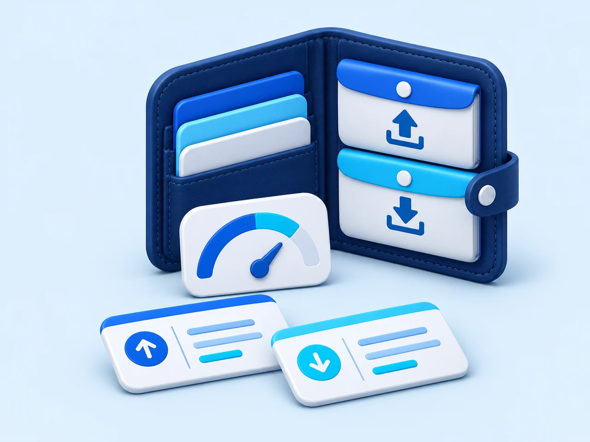
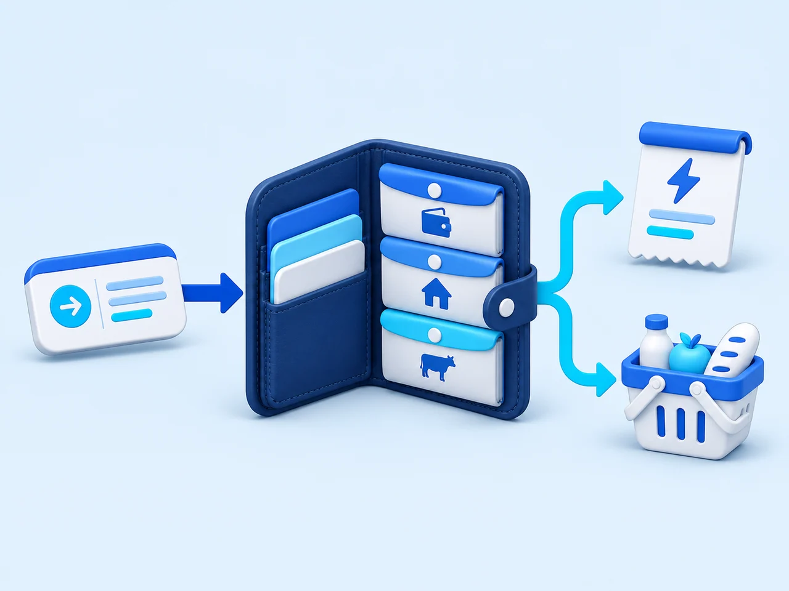
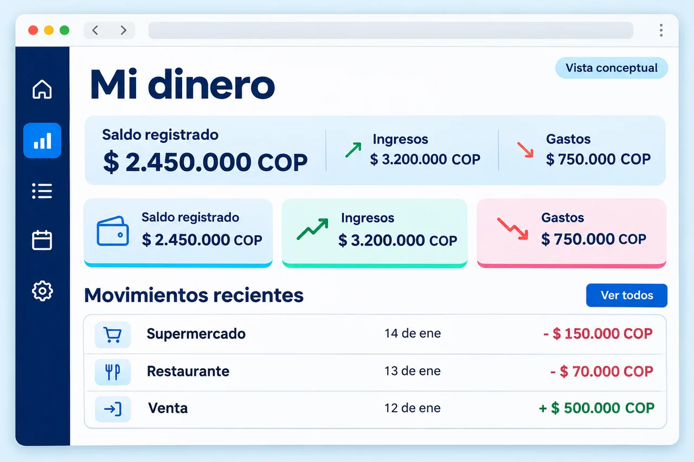
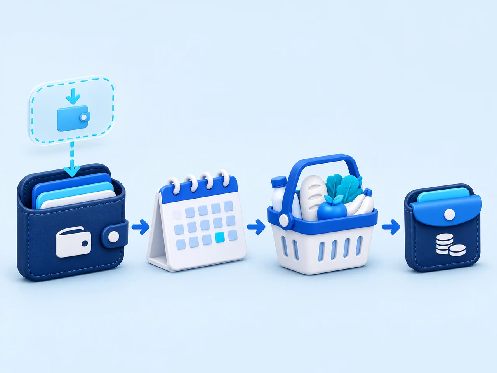
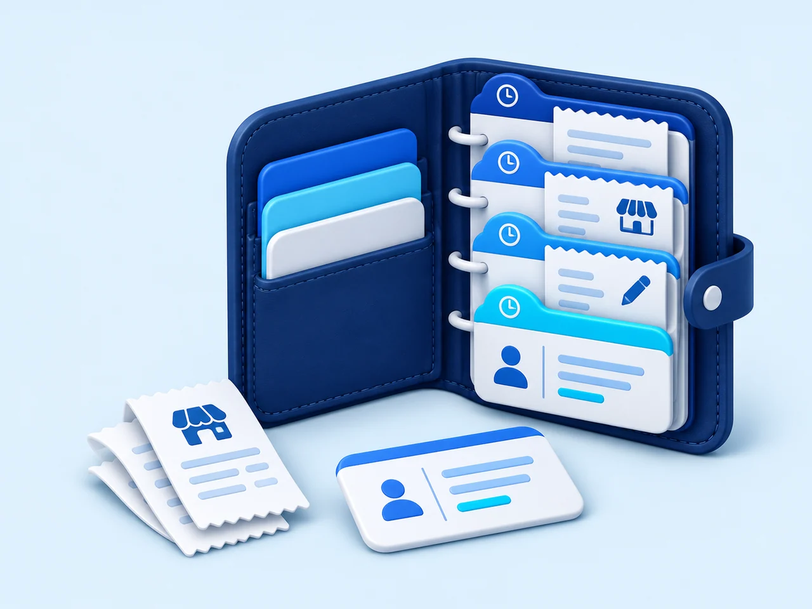
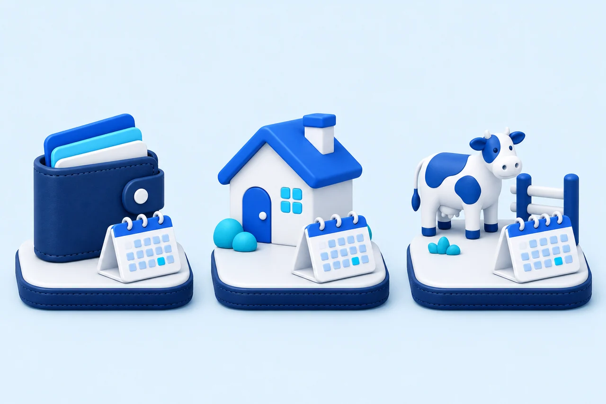
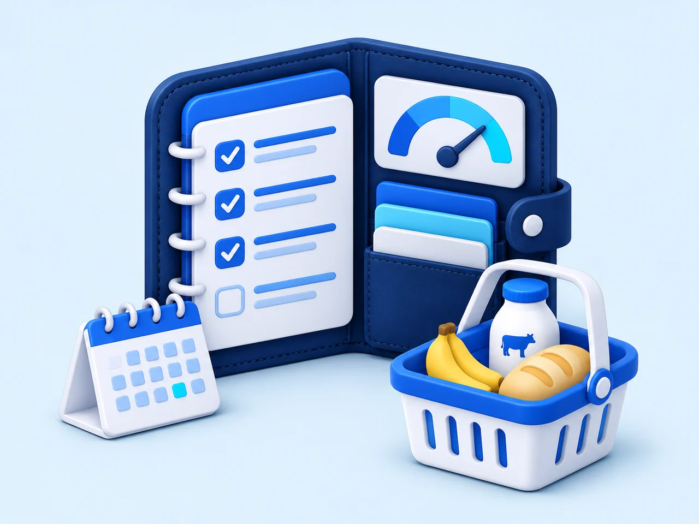
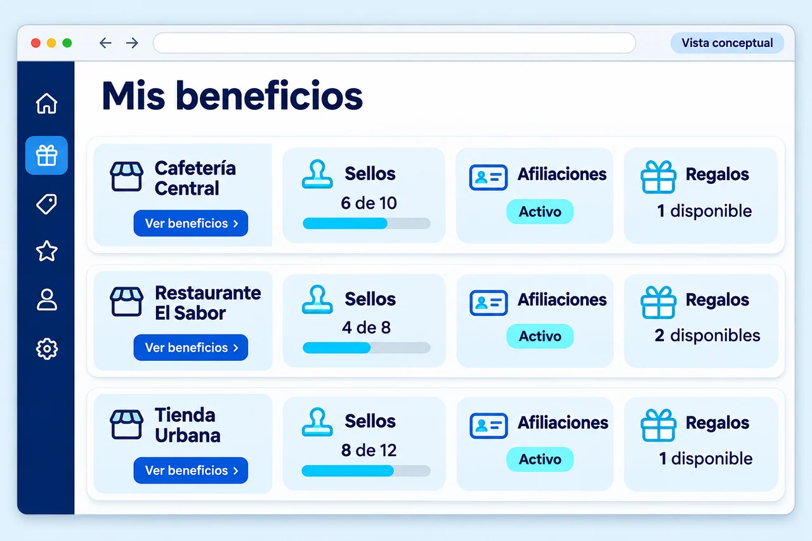
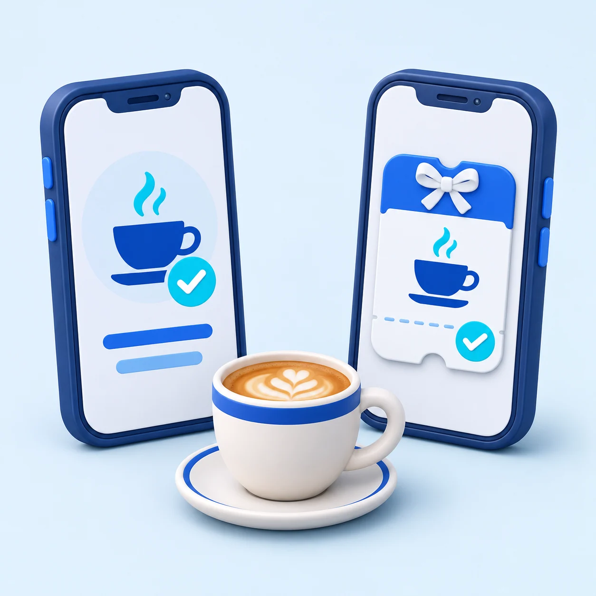
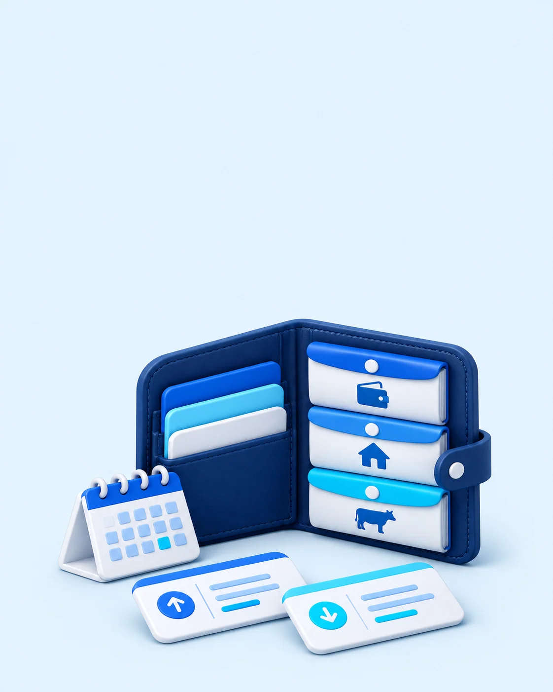

REGISTRALo que entra.
Lo que entra.
Lo que sale.
Anota tus ingresos y gastos. Consulta tus movimientos por fecha y categoría, incluso si compraste fuera de un negocio Qori.
QORI CUSTOMER · GRATIS PARA COMPRADORES
Entiende cuánto tienes, organiza lo que viene y encuentra beneficios cuando vayas a comprar.
Una cuenta gratuita. En tu celular y en tu computador.

Tu dinero, primero. Finanzas para tu vida diaria.
Cada actividad, aparte. Personal, Casa o tu negocio.
Tus compras sí cuentan. Conecta con negocios Qori.
01 / ORGANIZA LO QUE TIENES
Cuánto tienes registrado, qué dinero esperas recibir, qué pagos te esperan y cuánto podría quedarte. Una mirada que conecta tus decisiones.


Anota tus ingresos y gastos. Consulta tus movimientos por fecha y categoría, incluso si compraste fuera de un negocio Qori.

Contrasta ingresos previstos, pagos pendientes y compras planeadas. Distingue el dinero disponible del que todavía no has recibido.

Guarda comprobantes y consulta tus compras. Cuando un negocio Qori te envíe una venta, podrás recibirla según tu vinculación y autorización.
Tus cifras se calculan con lo registrado en Qori. No son una consulta automática al saldo de tus cuentas bancarias.
Organizar mi dineroMENOS COSAS EN LA CABEZA
No necesitas tenerlo todo resuelto.
Empieza por saber dónde estás hoy.
TUS PAGOS, A TIEMPO
Arriendo, servicios, seguridad social o suscripciones. Organiza tus compromisos recurrentes y elige cuándo quieres recordarlos.
Los avisos requieren permiso de notificaciones, navegador compatible y una sesión activa. Qori registra tus pagos; no los debita de tu banco.
ENTIENDE TUS CRÉDITOS
Separa capital, intereses, seguros y otros cargos. Organiza créditos de libre inversión, vivienda, vehículo, tarjetas y otros tipos habituales.
Prueba qué cambiaría al hacer un abono, bajar la cuota, terminar antes o liquidar. Compara cuánto necesitarías hoy y el ahorro estimado.
Explorar el simulador de deudasSimulaciones mensuales a tasa fija. Los cargos y la liquidación definitiva se confirman con el acreedor.
Los porcentajes cambian en cada cuota. Consulta el desglose mensual y guarda tus escenarios.
UN LUGAR PARA CADA PARTE DE TU VIDA
Separa tus contabilidades para que un ingreso del ganado no se confunda con el dinero personal. Cada una conserva sus propios movimientos, compromisos y proyección.

Empieza con Personal y crea las contabilidades que necesites: Casa, Ganado o tu actividad.
Separar mis contabilidades02 / COMPRA CON UN PLAN
Anota lo que falta, prepara un estimado y lleva el registro de lo que realmente compraste. Los pendientes te esperan en la próxima lista.
Si la compra ya está registrada o te llegó desde Qori Empresa, puedes vincularla para evitar repetir el gasto. Lo que no compraste no se presenta como ahorro.

03 / DESCUBRE LO QUE PUEDES RECIBIR
Encuentra negocios, consulta lo que publican y reúne tus programas de fidelización, tarjetas, actividades y beneficios en una sola cuenta.
Encontrar negocios y beneficiosEn cada lugar Qori,
tus compras sí cuentan.
MUCHOS NEGOCIOS. UNA CUENTA.
Consulta tus tarjetas y puntos por negocio. Descubre actividades y acepta las invitaciones que te interesen.

Cada negocio define disponibilidad, vigencia y condiciones. Los puntos y premios pertenecen a cada programa; no todas las compras acumulan beneficios.
UN DETALLE QUE LLEGA
Elige un producto que un negocio tenga habilitado para regalar. Indica a quién quieres enviárselo y sigue las instrucciones de pago.

EMPIEZA CON LO QUE SABES HOY
No necesitas reconstruir toda tu vida financiera para empezar a organizarla.
Entra con tu correo y el código de verificación. Tu cuenta de comprador es gratuita.
Indica el dinero que tienes registrado y una fecha. Separa tus contabilidades si lo necesitas.
Registra un gasto, agenda un pago o agrega lo que falta a tu lista de mercado.
CLARO DESDE EL PRINCIPIO
Tus finanzas primero.
Tus beneficios contigo.
Sí. La cuenta de comprador no tiene costo de suscripción. Los productos y servicios que compres a los negocios conservan sus precios y condiciones.
Sí. Puedes usar el portal desde tu celular o computador. En navegadores compatibles puedes instalarlo o agregarlo a tu pantalla de inicio desde el menú del navegador.
De tu saldo inicial, los ingresos y gastos que registres, las compras recibidas de Qori Empresa y los compromisos que organices. Qori no consulta automáticamente tu saldo bancario. Un ingreso previsto todavía no es dinero disponible.
Sí. Puedes registrar gastos manualmente y preparar tu lista de mercado sin que el negocio esté en Qori. Los beneficios publicados y las compras enviadas desde Empresa requieren que el negocio participe en la plataforma.
Sí. Cada contabilidad tiene sus movimientos, saldo inicial, deudas, listas y compromisos. Puedes registrar traslados que ya hiciste entre contabilidades de la misma moneda, sin contarlos como nuevos ingresos o gastos.
Tus registros financieros personales son privados. Un negocio consulta la información de su relación contigo, no tus gastos personales ni tus tarjetas de otros negocios. Tú decides qué invitaciones aceptar. Consulta la política de privacidad.
Depende del programa y las condiciones de cada negocio. Los puntos y premios no se comparten automáticamente entre establecimientos. Consulta vigencia, disponibilidad y requisitos antes de participar.
QORI CUIDA TU BOLSILLO
Organiza tu dinero. Prepara tus compras.
Descubre lo que los negocios tienen para ti.

¿Tienes un negocio? Conecta tus ventas, activaciones y beneficios con tus compradores.
Conocer Qori Empresa